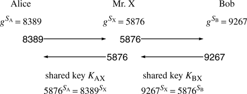

In its original conception, the Diffie-Hellman algorithm has limited functionality, since the only thing it really accomplishes is having a secret number that both Alice and Bob know, and nobody else can figure out based on the messages they overhear between Alice and Bob. Neither Alice nor Bob start out with any secrets, yet after the exchange of two messages that the world can overhear, Alice and Bob will know a secret number. Once they know a secret number, they can use conventional cryptography (secret key cryptography like DES, for instance) for encryption. Diffie-Hellman is actually used for key establishment (getting two things to agree on a common secret key) in some applications, for instance data link encryption on a LAN. A weakness of Diffie-Hellman is that although two individuals can agree on a shared secret key, there is no authentication, which means that Alice might be establishing a secret key with a bad guy. We will talk about this more after we force you to read through how Diffie-Hellman works. To start out, there are numbers p and g, where p is a large prime and g is a number less than p with some restrictions that aren't too important for a basic understanding of the algorithm. p and g are known beforehand and can be publicly known. For instance, Alice could choose a p and g and send them (publicly) to Bob, for instance by publishing them in The New York Times.
Once Alice and Bob agree on a p and g, each chooses a 512-bit number at random and keeps it secret. Let's call Alice's secret number SA and Bob's secret number SB. Each raises g to their secret number, mod p. The result is that Alice computes some number TA and Bob computes some number TB. They exchange their Ts. Finally, each raises the received T to their secret number.
Nobody else can calculate gSASB in a reasonable amount of time even though they know gSA and gSB. If they could compute discrete logarithms, i.e. figure out SA based on seeing gSA, then they could figure out the Alice/Bob shared key. But we assume they can't compute discrete logarithms, because of the Fundamental Tenet of Cryptography (mathematicians haven't figured out how to do that easily in spite of considerable effort, or at least they haven't told us they have). 6.4.1. The Bucket Brigade/Man-in-the-Middle AttackIf Alice receives TB indirectly, there is no way for her to know for sure whether the number came from Bob. She will establish a secret key with whoever transmitted TB, but it certainly might not be Bob. Let's assume Alice is talking to X, who may or may not be Bob. Once Alice and X establish a secret key, they can encrypt all their messages so that only Alice and X can read them. Let's say the first thing Alice and X exchange in their encrypted communication is a password that Alice and Bob have previously agreed upon, one password that Bob is to say to Alice, perhaps The fish are green, and one that Alice is to say to Bob, for instance The moon sets at midnight. If Alice receives the expected password from X, can she assume she is talking to Bob? (Think about this a bit before reading the next paragraphÂit's fun. Hint: Obviously, there must be some subtle attack or we wouldn't claim it was an interesting question.) Assume p and g are publicly known (if not, Alice can put them into her message). Alice places the ad Dear Bob. I'd like to talk to you. 8389. Love, Alice. Suppose there's a bad guy, Mr. X, who works for the newspaper. He makes one copy of the newspaper with Alice's ad printed as Alice wished, and bribes the newspaper deliverer to give that copy to Alice. Meanwhile, Mr. X picks his own SX and computes gSX mod p. He edits the ad slightly by substituting this number instead of 8389, and has that version printed in the rest of the newspapers. Later, Bob replies, by ordering the ad So pleased to talk to you. My magic number is 9267. Love, Bob. Mr. X makes one copy of the newspaper with Bob's ad printed as Bob wished, and arranges for Bob to receive that copy. Mr. X edits Bob's ad slightly to substitute his own number for Bob's, and arranges for the newspaper with that version of the ad to get to Alice. Mr. X computes KAX = 8389SX and uses that for talking to Alice, and computes KBX = 9267SX and uses that for talking to Bob. Figure 6-4. Bucket Brigade/Man-in-the-Middle Attack Now suppose Alice sends an encrypted message (to Mr. X) which includes the password The fish are green. Mr. X can decrypt the message because it is encrypted using the key he shares with Alice. Mr. X reencrypts and transmits Alice's password to Bob, which reassures Bob that he is indeed talking to Alice, and Bob then transmits (encrypted, to Mr. X) The moon sets at midnight. Mr. X decrypts Bob's message, extracts the password, and reencrypts and transmits the password to Alice. Now both Alice and Bob think they are talking to each other. To guard against this threat, perhaps Alice and Bob should transmit the actual secret number they think they are using, over the encrypted channel they have established? That won't work either. Alice sends the message I think we are using KAX; however, Mr. X decrypts the message and edits it to be I think we are using KBX before encrypting and forwarding it on to Bob. Suppose instead Alice and Bob attempt to reassure themselves that they are indeed talking to each other by asking each other personal questions. If Bob asks What movie did we see the first night we met in Paris?, Mr. X merely decrypts the message with KBX, encrypts it with KAX, and forwards the message on to Alice. When Alice replies, Mr. X merely forwards the message on to Bob. (We're assuming Alices's memory of past evenings makes it worthwhile for Mr. X to actually wait for her answer rather than making one up himself.) The name bucket brigade attack comes from the way firefighters of old formed a line of people between a water source and a fire and passed full buckets toward the fire and empty buckets back. But the less politically correct term man-in-the-middle has become more common. After establishing the shared keys, Mr. X passes messages back and forth and can examine them and/or modify them as they go. Using Diffie-Hellman alone, there's really nothing Alice and Bob can do to detect the intruder through whom they are communicating. As a result, this form of Diffie-Hellman is only secure against passive attack where the intruder just watches the messages. 6.4.2. Defenses Against Man-in-the-Middle Attack6.4.2.1. Published Diffie-Hellman NumbersOne technique by which Diffie-Hellman can be secure against active attacks is for each person to have a somewhat permanent public and secret number instead of inventing one for each exchange. For this to work, everyone (in the communicating set) has to agree on a common p and g. The public numbers are then all published by some means that is assumed reliable (for instance, through a PKI, see Chapter 15 PKI (Public Key Infrastructure)). To the extent an intruder can't get in and modify the published public numbers, this makes Diffie-Hellman immune to active attacks. It has the additional advantage of eliminating the first two messages of the protocol. Knowing my own secret and looking up the public number of the person with whom I want to communicate, I can compute a key that the two of us will share for all messages we send to one another. 6.4.2.2. Authenticated Diffie-HellmanIf Alice and Bob know some sort of secret with which they can authenticate each other, either a shared secret key or knowledge of each other's public keys (and their own private keys), then they can use this secret to prove that it was they who generated their Diffie-Hellman values. We call such an exchange an authenticated Diffie-Hellman exchange. The proof can be done simultaneously with sending the Diffie-Hellman value, or after the Diffie-Hellman exchange. Examples are:
6.4.3. Encryption with Diffie-HellmanWe've described the lack of authentication with Diffie-Hellman. There's another disadvantage with classic Diffie-Hellman: in order for two individuals to communicate, they have to first have an active exchange. This is easy to remedy. Suppose Alice is working late and wants to send an encrypted message to Bob that Bob will be able to read when he shows up at work the next morning at 7 AM (and Alice has no intention of being around at 7 AM). First everyone computes a public key, which consists of the three numbers <p, g, T>, where T = gS mod p, for the private key S. These public keys are displayed in a reliable and public place (like being published in The New York Times). So Bob has published a <pB, gB, TB>. If Alice wants to send Bob an encrypted message, she picks a random number SA, computes gBSA mod pB and computes KAB = TBSA mod pB, and uses that as the encryption key to share with Bob. She uses KAB to encrypt the message according to any secret key cryptographic technique, and sends the encrypted message, along with gBSA mod pB to Bob. Bob raises gBSA mod pB to his own secret SB, and thereby calculates KAB which enables him to decrypt the message. 6.4.4. ElGamal SignaturesUsing the same sort of keys as Diffie-Hellman, ElGamal came up with a signature scheme [ELGA85]. It is much harder to understand than signing with RSA. While it's important to know that it's possible and to understand the political and performance implications, the mathematics is tedious and unintuitive. We reluctantly recommend that all but true die-hards skip this section. ElGamal signatures require each individual to have a long-term public/private key pair (the public key being <g, p, T> and the secret key being S, where gS mod p = T, as described for Diffie-Hellman), and (surprisingly) require an individual to generate a new and different public/private key pair for each item that needs to be signed. Luckily the per-message public/private key pair is easy to compute. For a particular message m, choose a random number Sm and (using the same g and p as in the long-term key) compute gSm mod p = Tm. To use ElGamal, there has to be a message digest function that is well-known. Given a message m, to compute a signature, you first compute the message digest of m|Tm. Call that message digest dm. Then you calculate Sm + dmS mod (p-1), which is the signature. Let's call that X (since we've already used S for the Secret number, and some people sign documents with an X). m is transmitted, along with X and Tm. To verify this signature, you compute dm and check that gX = TmTdm mod p. This will be true, assuming the signature is valid, because
This is not terrifically intuitive. The important things to try to convince oneself of are:
6.4.5. Diffie-Hellman DetailsÂSafe PrimesWhile Diffie-Hellman works with any prime p and any number g, it is less secure if p and g don't have additional mathematical properties. It turns out that for obscure mathematical reasons it is particularly nice if (p-1)/2 is also prime. A prime p that satisfies this additional constraint is called a safe prime, or a Sophie Germain prime. It is also particularly nice if gx It is computationally expensive to choose p and g. Theoretically, one only needs to do it once. You could keep using the same p and g. It could even be a standard, and everyone could use the same p and g. However, that is not advisable. It turns out to be possible, though incredibly space-and computation-intensive, to calculate a large table based on a single p, which would allow you to compute discrete logarithms for that p. A similar scheme would allow you to break RSA, in the sense of being able to calculate someone's private key based on their public key, but there is not that much incentive to do so because that would only allow you to break one person's key. If the p for Diffie-Hellman were broken, then every key exchange based on Diffie-Hellman could be broken. Simply changing p occasionally will eliminate this threat. |
 1 mod
1 mod

 |